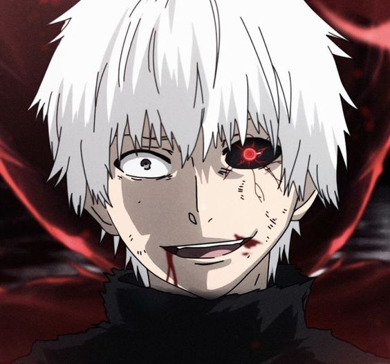
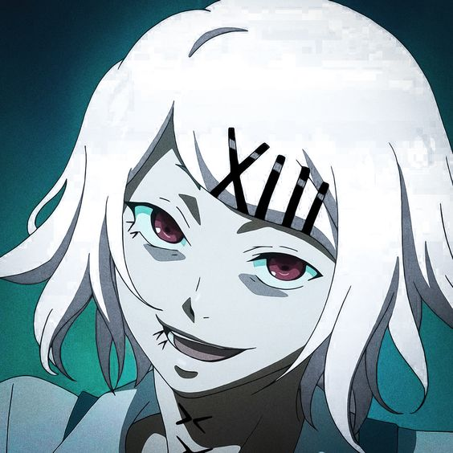
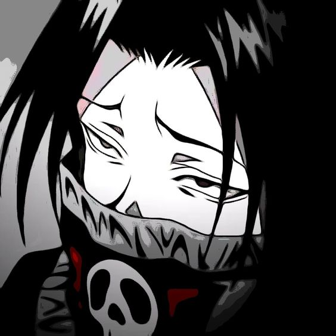

Как понять, что человек, которого вы встретили - дединсайд? Это не так сложно - представители этой субкультуры имеют следующие внешние признаки:
- Преобладание в одежде таких цветов, как: чёрный, белый серый, редко - красный
- Слишком мешковатая или наоборот слишком обтягивающая одежда(возможны сочетания)
- Длинная чёлка, закрывающая глаза
- Средняя длина волос - обычно нарочито неухоженных
- Цвет волос белый или серый, часто встречается чёрный
- Аксесуары вроде цепей и колец холодного оттенка
- Неухоженные ногти
- Искусанные губы
- Бледная кожа и синяки под глазами
Маскотами субкультуры можно обозначить персонажей аниме(слева направо): Канеки Кен и Джузо из аниме и манги "Токийский гуль" и Фейтан и Киллуа из аниме и манги "HunterxHunter". Именно эти персонажи являются ориентирами для представителей субкультуры как по мироощущению, так и по внешности.
  Увидеть настоящего дединсайда на улице - редкость, т.к. они обычно держатся подальше от людных мест и по возможности ограничивают любые социальные контакты. Если речь идёт о школьных дед инсайдах - они предпочитают сидеть на задних партах в одиночестве и ни с кем не общаться.
Как не перепутать?
Некоторые активные ранее субкультуры очень схожи с дединсайдами. Несмотря на то, что они уже не настолько популярны, как раньше - путать их всё равно не стоит - никому из представителей это не нравится.
От готов дединсайды отличаются довольно сильно - перепутать их можно в основном из-за преобладающих тёмных тонов одежды и иногда светлых волос и бледной коже, если речь о пастельных готах. Главное отличие состоит в том, что готы своими образами пытаются создать как можно более утончённое и аристократичное впечатление, в то время как дединсайды пытаются максимально выразить своё безразличие к мнению других через некоторую небрежность. Вы никогда не увидите на дединсайдах массивных серебрянных украшений вроде колье и серёг, а так же сложных элегантных нарядов.
Эмо и дединсайды очень похожи - особенно стилем в одежде и закрывающими глаза причёсчками, но это только на первый взгляд. Основа стиля эмо - именно "детская" неряшливость, так как основа их философии состоит в свободном проявлении эмоций, которое в обществе часто связывают с инфантильностью. Эмо видят жизнь чередой страданий, что похоже на мироощущение дединсайдов, но в отлоичии от них эмо свои страдания чувственно переживают и не боятся это выражать. Дединсайды "разочарованы в мире и обществе", поэтому не видят смысла в проявлении каких-либо эмоций кроме гнева.
Вернуться на главную